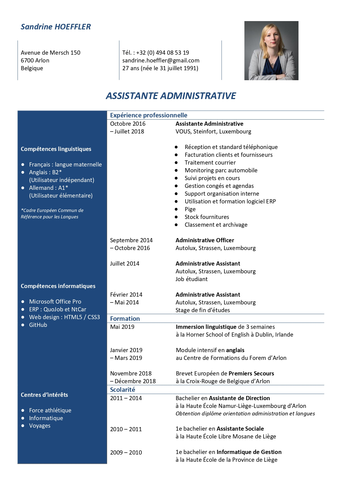

Commençons par le commencement
Pourquoi ce site ?
Diplômée en Assistant de Direction, cela fait quelques années que je suis sur le marché du travail. J'ai remarqué que, malgré ma formation très complète, je rencontre parfois quelques petites difficultés. Souvent, la solution est vraiment toute simple, mais il fallait y penser. Afin de vous éviter de perdre ces quelques minutes précieuses par-ci par-là, j'ai décidé de créer ce blog
Mon curriculum vitae
Ici, tu trouveras mon CV, tout simplement !
Tu peux cliquer dessus pour l'agrandir
